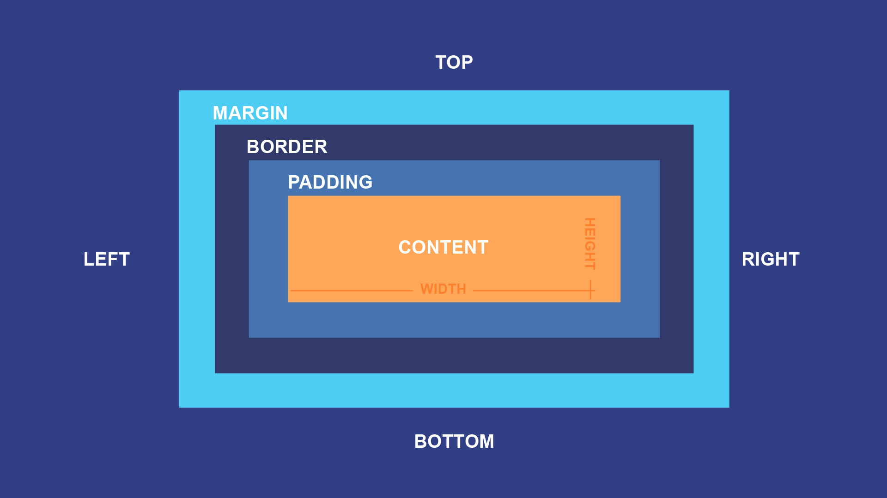

Boxmodellen - Med hjälp av boxmodellen så styr man hur layouten ska se ut för block-eelement. Boxmodellen består av fem olika delar. Konturlinje(outline), kantlinje(border), marginal(margin), utfyllnad(padding) och innehåll(det innehåll som ska ligga inuti boxen).
Konturlinje - Konturlinje eller outline lägger en extra konturlinje runt om allting. Det går att sätta bredd, färg och linjetyp och påminner om kantlinjer eller border. oavsätt vilken box.sizing man använder så bidrar aldrig konturlinjen till storkleken på hela boxen
Kantlinjer - Kantlinjer används för att skapa en ram runt innehållet. Exakt som med konturlinjerna så kan man ändra färg, linjetyper och tjocklekar. Här kan dock räknas till boxens storlek beroende på vilen box-sizing man använder.
Marginal - Maringler används för att skapa ett tomrum mellan kringliggande boxelement. Detta är en yttermarginal.
Utfyllnad - Utfyllnad eller padding används för att skapa lite tomrum omkring innehållet. Detta är alltså en innermarginal
Innehållet - Det här är innehållet som ska ligga inuti boxen.
Content-box - Detta är det förvalda värdet som används om man inte anger något annat. Width och height anger enbart storleken på innehållet och övriga delar av boxen ligger utanför detta värde. Exakt som det låter på namnet "Content-box" så handlar det om innehållet.
Border-box - Med border-boxen så inkluderar värdet som man anger för width, height, padding och border. Margin har dock en egen bredd. Detta gör det mycket lättare att anpassa boxstorleken till hela innehållet. I de fall man använder border-box så gäller alltså element som sätts i width och height oavsätt vilka andra egenskaper som sätts. Detta gör det enklare att passa samman flera element på samma rad.